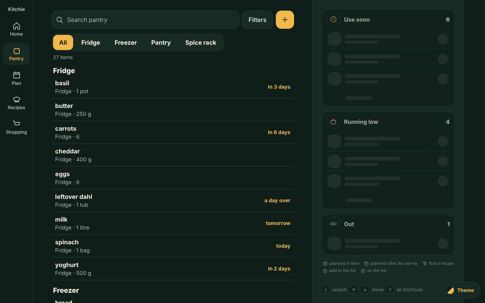
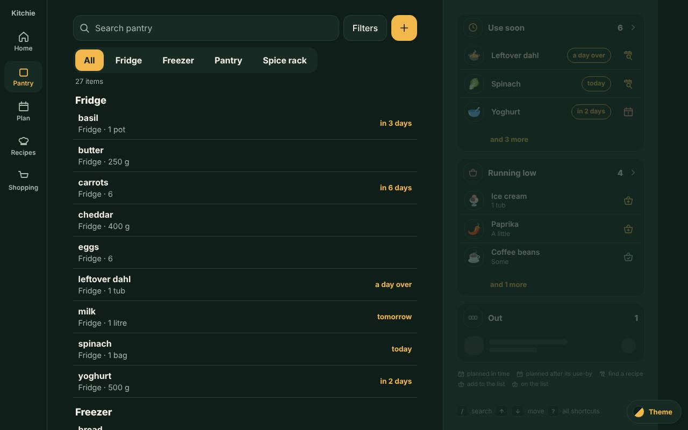
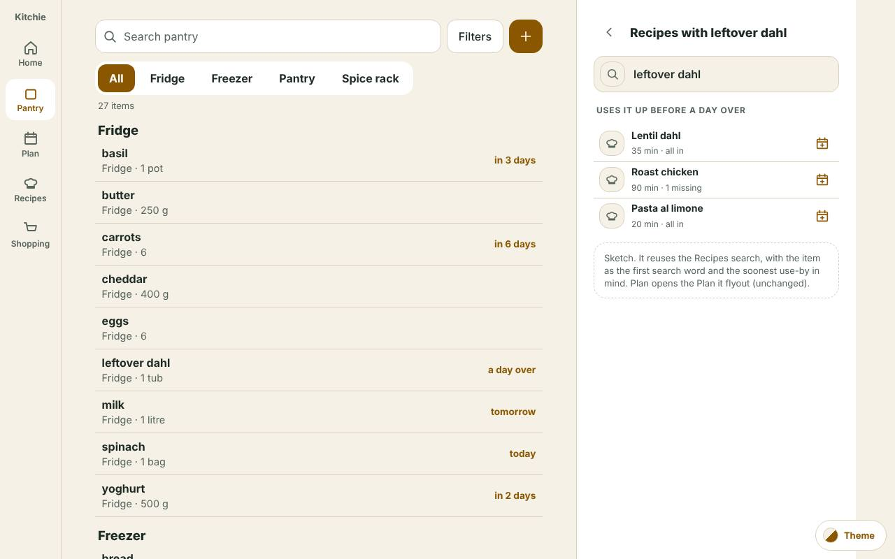
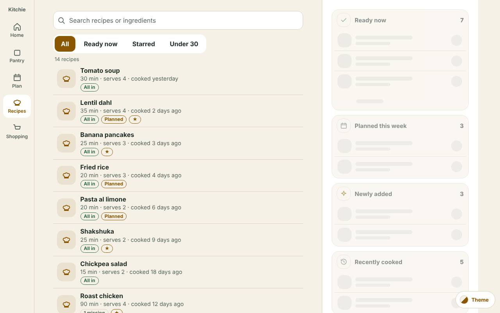
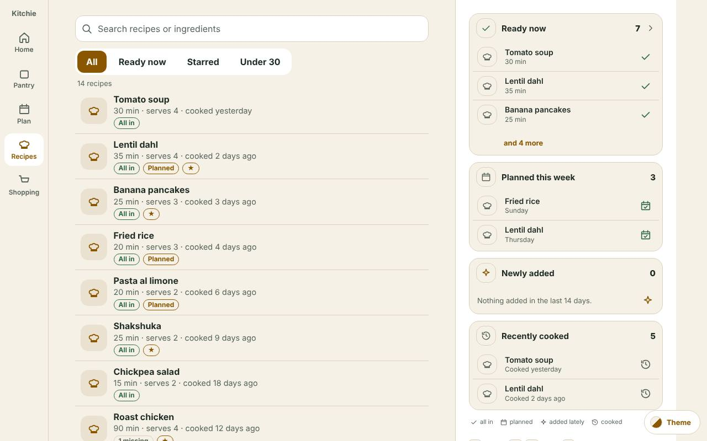

Pantry and Recipes on desktop: what the side panel shows when nothing is picked
Mockup, revised 17 October 2026 for the owner’s decisions (Kitchie #867). Option F is decided for both screens. Nothing built.
Owner, by voice, 17 October 2026: “Under Pantry and Recipe there is a flyout that is blank. Under Recipe it says ‘pick a recipe to see it here’; under Pantry it says ‘pick an item to see it here’. That seems pretty ordinary, but what are your design options for that space when something is not picked?” Six directions were drawn for both screens (A to F). On 17 October the owner chose F's shape and revised it (below). A to E are kept, switchable at the bottom bar, as the options that were not chosen.
Pantry: Use soon, Running low, Out. One shared tile and row shape, the same information as Home’s tiles, reused across all three. Data source: if the person came from Home, use what Home already loaded and do not reload it. If they came straight to Pantry, the pane is lazy loaded: the count first, then a small non-item-specific shimmer, then the real rows replace it the moment they arrive. Use soon shows plan state as icons: planned before the use-by (good), planned after the use-by (different icon), not planned (a one-click “find a recipe to plan”). Running low puts anything not on the shopping list first, each with an Add to shopping list icon; anything already on the list sinks to the bottom. Out follows the same rule. Icons over words wherever possible.
Recipes: Ready now, Planned this week, Newly added recipes, Recently cooked. The same shared widget and the same count-first, shimmer, replace behaviour, with the same came-from-Home or straight-to-Recipes data rule. “Recently cooked” is now Recently cooked. “One thing short” was not chosen and is dropped from the decided view (it stays in option A only, as a superseded option).
Try it: How the pane gets its data has a Came from Home / Came straight to Pantry (or Recipes) switch, a Replay button and a log of what happened at what millisecond. Reduced motion is honoured: the grey placeholders stand still, with the same timing.







| Arrived | 0 ms | about 250 ms | about 900 ms onward |
|---|---|---|---|
| From Home | Use soon and Running low (Pantry) or Ready now and Planned this week (Recipes) draw at once from what Home already holds in the browser. No request, no shimmer. | The sections Home does not hold (Out; Newly added, Recently cooked) show their count, then grey rows. | Their rows arrive and replace the grey, each as soon as its own data is in. |
| Straight here | The section heads draw with the page, each with a small grey pill where its number will be. | All counts appear (they come with the page or in the first small answer, never from rows loaded so far). One grey row per row to come, so nothing jumps. | One request, fired after first paint and only when nothing is picked, brings the rows; each section’s rows replace its grey rows in any order. |
A section with nothing in it leaves once the counts arrive. If every count is zero the pane settles on today’s one line. An empty household needs no shimmer, because the list already knows it is empty.
| Section | Row | Order |
|---|---|---|
| Use soon | Item, its use-by word, one plan icon: calendar with a tick (planned before the use-by; tooltip names the meal and the night), calendar with a warning (planned, but after the use-by; the tooltip says so), search over a calendar (not planned; one click opens the Recipes search with the item typed in). | Recommended: closest use-by first, but items already planned in time go to the bottom, because they need nothing from you. Unplanned and planned-too-late rows stay on top, soonest first. |
| Running low | Item, how much is left, then a basket-plus icon (Add to shopping list), or a basket-tick icon (on the list, no add button). | Not on the list first (these need you), on the list last. Adding moves the row down without changing the count. |
| Out | As Running low, with where it lived. | Same rule. |
| Ready now | Recipe, minutes, a tick (all ingredients are in). The head opens the same filter as the chip. | As the list. |
| Planned this week | Recipe, the night, a calendar tick. | A to Z in the mock (the build may order by night). |
| Newly added | Recipe, “Added 3 days ago”, a sparkle (“New”) icon. Last 14 days, newest first, two rows. With nothing added it shrinks to one quiet line that offers the assistant. | Newest first. |
| Recently cooked | Recipe, “Cooked yesterday”, a clock-back icon. Last 7 days. | Most recent first. |
The small bar at the bottom of each screen (“Mockup only”) switches option A to F, household size, Came from Home or Came straight here, Replay, and touch. Click any name in a pane to open it in the lane; Ctrl or Cmd with Esc closes it and the pane comes back.
From 1024px up, the Pantry and Recipes keep a 400px lane on the right even when nothing is open. The only thing in it is one line of muted text, drawn by CSS alone (a ::after in desktop-layout.ts for the Pantry and desktop-css/recipes.ts for Recipes): “Pick an item to see it here.” and “Pick a recipe to see it here.” It costs nothing to load, and it also teaches nothing and answers no question. About 400 by 800 pixels of the screen (a third of it) is idle every time you arrive.
| Option | Pantry shows | Recipes shows | Fetch cost | What is weak |
|---|---|---|---|---|
| A At a glance | Your kitchen (items, places), then Use soon (7 days), Running low, Out, three names each, each head applies the same filter Home’s tiles do | Ready now, One thing short (superseded: not chosen), Planned this week, Recently cooked | None. Counted from the rows on the page (use-by, low, gone; ready, cooked days ago, planned). Fixed cost: one pass over the rows (about 420 in the large household). | Tallest pane (up to 838px in the large household), so it scrolls on a laptop. Out is on show though the default list hides it. One thing short needs a missing count the list does not carry. |
| B Things to do | Add an item, Scan a receipt, See what is going off, See what is running low | Ask your assistant to add a recipe, Plan a recipe this week, See what is ready now, Review changes | None. Counts on two rows only. | Mostly repeats buttons already on the screen (the + and the Filters). Says what you could do, not how things are. Nothing to read. |
| C Pick up where you left off | The last item you opened, and the three before | The last recipe, the three before, Recently cooked | None from the server. A short list kept in this browser (owner, 15 Oct 2026: a remembered choice is client-side). | Empty on a first visit and on a new device. Mostly the list’s own order again. Needs browser storage. |
| D Keys and search | A search box that takes focus, then the shortcuts (Move, Open, Edit, History, Use one, Used up, Add to the list, Add an item, Filters, All shortcuts) | Search, then Move, Open, Open the full recipe, Notes and reactions, Edit, History, Share | None. Static text. | Teaches once, then is clutter every day after. Useless without a keyboard (the tablet shows “Tap an item”). Shift+? already opens the shortcut list. |
| E No pane until needed | The lane is not drawn until you pick; closing hides it again | Same | None. Less than today. | No gain on a desktop of 1280px or more: the list is already capped at 640px, so it only leaves a bare right side. Between 1024px and about 1224px the list is wider but moves sideways on every pick and every close, which is the move the lane was built to avoid. |
| F Decided: A, trimmed, one shared widget, revised 17 October | Use soon, Running low, Out (see the tiles above), key line at the foot. When nothing needs attention it is today’s line, unchanged. | Ready now, Planned this week, Newly added, Recently cooked, then the same key line. When none has anything it is today’s line. | Counts at once, rows after a short wait when straight here; nothing when from Home for the sections Home holds (see Build impact). | The numbers must equal the list (tested). Home holds only three rows and no plan state, so the pane needs a little more than Home sends (EP-Q2). |


F: the at-a-glance pane, trimmed to the few things that need you, with one line of keys at the foot. The owner kept this shape on 17 October and changed what is in it, how it loads, and how its rows look (the sections above). It answers the question a person has when they land on the page and have not picked anything (“what needs me?” on the Pantry, “what can I cook?” on Recipes), it matches Home’s tiles so nothing is new to learn, and it costs no request. When there is nothing to say, it says exactly what it says today, so no household ever sees an empty summary. It is the same shell for both screens (header, blocks, key line), so the build is one component with two block lists.
Why not the others. A is F with more, and too tall for a laptop. B repeats the + and Filters that are already on screen. C is a nice extra but empty at first and tied to one browser; it can be added under F later. D is a one-off lesson that Shift+? already gives. E is the cheapest, but on a 1280px screen it only moves the empty space to the right.


At 1024px the lane is still 400px and the list column narrows to fit. With touch there is nothing to press keys on, so the key line becomes “Tap an item to open it.”, and D shows a tap line instead of its list of keys. Every control in a pane is 44px or more high on desktop and tablet alike (checked). Below 1024px the lane is not drawn and nothing here applies (the phone keeps its own pattern).


- EP-1 Decided: F for both screens (the shape and the shared shell). A to E remain on the bottom bar as the options not chosen.
- EP-2 Decided: one shared widget for every section on both screens (“the dummy widget”): same tile shape, same count-first, shimmer, replace behaviour.
- EP-3 Calm state: today’s one line stays (kept from before, not re-asked).
- EP-4 The key line at the foot stays (kept from before).
- EP-5 “Last opened” (C): not now (kept from before).
- EP-D1 Decided: Pantry sections are Use soon, Running low, Out. Recipes sections are Ready now, Planned this week, Newly added recipes, Recently cooked. “One thing short” is not chosen.
- EP-D2 Decided: from Home, use what Home already loaded; straight to the screen, lazy load with the count first, then a non-item-specific shimmer, then the rows replace it.
- EP-D3 Decided: Use soon shows plan state as icons (planned in time, planned after the use-by, not planned with a one-click find-a-recipe). Running low and Out put anything not on the shopping list first with Add to shopping list, and anything on it last. Icons over words.
- EP-P1 Proposal. The pane replaces the one-line text in the same 400px lane, with the same surface, border and 24px padding as the item panel, so opening something changes the content and nothing else moves.
- EP-P2 Proposal. A block head is a button that applies the same filter Home’s tiles do (Use soon, Running low, Ready now), and the list then shows exactly that many rows. No new filter is invented. Planned this week, Newly added and Recently cooked are plain labels because the Recipes list has no such chip.
- EP-P3 Proposal. A name in a block opens that item or recipe in the lane, the same as clicking its row; closing it (X, or Ctrl or Cmd with Esc) brings the pane back and focus returns to the row.
- EP-P4 Proposal. The pane shows three names for Use soon, Running low and Ready now and two for the rest, with “and N more” (the filter) where a filter exists. Use soon is sorted by date, soonest and overdue first, never A to Z, with planned-in-time rows last (EP-P13).
- EP-P5 Proposal. “Use soon” means a use-by within 7 days or overdue; “Running low” is the existing low flag. Both are what Home already uses, to be confirmed against Home’s tile before build.
- EP-P6 Proposal. The numbers are never separate from the list: a count is the number of rows its filter shows. This is a build test (the mockup check does it for A and F in both households).
- EP-P7 Proposal. An empty household gets prompts, never a summary of nothing: Pantry says “Your pantry is empty” with Add an item and Scan a receipt; Recipes says “No recipes yet” with Ask your assistant to add one (recipes are added through the assistant).
- EP-P8 Superseded. The earlier F left Out out of the pane. The owner decided on 17 October that Out is shown, as the same tile as Running low. Its head opens the Out filter, which the default list hides (
data-gone, Kitchie #329), so the count and the filter agree. - EP-P9 Proposal. If the pantry cannot be read, Recipes F says “Kitchie cannot read the pantry right now, so it cannot say what is ready.” and shows no Ready now block.
- EP-P10 Proposal. The key line shows on a keyboard device only. On a touch tablet it reads “Tap an item to open it.”
- EP-P11 Proposal. The pane re-counts from the rows whenever the list changes (use one, used up, a filter), with no request, so it cannot drift out of date while it is on screen.
- EP-P12 Proposal. The pane is no taller than 768px at any household size for its first two sections (checked), so what matters is seen without scrolling on a small laptop.
- EP-P13 Proposal. Order of Use soon (the owner asked for a recommendation): closest use-by first, but items already planned in time go to the bottom, because they need nothing. Planned-too-late rows stay with the unplanned ones, since they still need you.
- EP-P14 Proposal. The three plan states are three different icons with an accessible name and a tooltip; colour is never the only signal. Only the not-planned icon is a button.
- EP-P15 Proposal. Add to shopping list from the pane changes the row at once (it moves to the bottom and shows the on-the-list icon), the count stays, and a short toast says what happened. Add is a pantry action that already exists; the pane adds no new write.
- EP-P16 Proposal. Newly added covers the last 14 days, newest first, two rows. With nothing added it is one quiet line that offers the assistant (recipes are added through it), never an empty block.
- EP-P17 Proposal. The shimmer is non-item-specific grey rows, one per row to come, so the pane does not change height when the rows arrive (checked within 12px). With reduced motion it is static grey; the timing is the same. Real timings in the mock: count at 250 ms, rows from 900 ms, each section 250 ms after the last; a build shows each the moment its data lands.
- EP-P18 Proposal. A one-line icon key sits under the blocks, quiet and small, so nobody has to guess an icon.
- EP-Q1 What is “Running low and not on the list”? Home’s Running low rows are the shopping list’s own low entries (
LOW_REASONSinhome.ts), so every one is already on the list, and an entry the household took off the list drops out. The owner’s rule needs low items that are not on the list. Recommended: the pane’s Running low and Out come from the item’s stock level (at or below its minimum, or at the Out level), then marked on-the-list by name, as the Pantry’s own preset does. Wrong guess: Add to shopping list never appears, because everything shown is already listed. - EP-Q2 How much does Home hand over? Home draws three rows per tile with no plan state, and its counts are not for the whole list. Recommended: Home’s page also embeds each section’s full count and, for Use soon, each row’s plan state and list state, from the same queries (no new schema); anything missing falls back to the lazy count-then-rows. Wrong guess: coming from Home would show a count that is wrong (3, not 6) or rows without an icon.
- EP-Q3 Newly added needs an added-at date. Recipe’s
list_familiesreturns families newest first but no date per row (contract 3.6);get_familyhasfamily.created_at, and Kitchie’s reader of the list takes none. Recommended: ask Recipe to addcreated_atto each list entry (additive, no Kitchie schema change); until then, show the newest two by order with no “3 days ago” and no 14-day window. Wrong guess: a row says “Added 3 days ago” on a guess. - EP-Q4 What does the find-a-recipe icon open? Recommended: the Recipes search in the lane with the item as the first search word (drawn as a sketch, reusing the existing look), and Plan opens the existing Plan it flyout. Alternative: go straight to Plan it with suggestions. Wrong guess: one extra click, or a search that is too wide.
- EP-Q5 Bring “One thing short” back on Recipes? Recommended: no (not chosen; it needs a missing count per recipe the list does not carry).
tools/empty-pane-check.mjs, 1231 checks pass)- Every option draws (or, for E, deliberately draws nothing) for every household: empty, typical, large, calm, and for Recipes the pantry-unreadable case, on both screens.
- The number in a block equals the rows its filter then shows (Pantry A and F, Recipes A and F, typical and large). The pane cannot disagree with the list.
- No request of any kind (fetch or XHR) at load, on a name click, or on closing.
- Every control in a pane is 44px or more high; no sideways scroll at 1024 or 1280; no page errors.
- Empty households get a way forward and never a summary; calm households get today’s one line with no blocks.
- A name opens its item; Ctrl or Cmd Esc brings the pane back;
/still focuses search. - E: at 1280 the list is already capped at 640px, so collapsing buys no width; below about 1224 the list moves when the lane opens. Recorded as the cost of E.
- F: the first two sections end above 768px in the typical and large households, on both screens.
- Loading, on a paused fake clock so the timings are exact: heads only with a grey pill, then the counts with one grey row per row to come, then the rows, with no jump in height and no request. From Home, the sections Home holds never shimmer. A calm household settles on today’s one line.
- Use soon: the three plan states are three different icons, each named; planned-in-time rows sit last; inside each group the closest use-by is first. Running low and Out: not on the list first with Add, on the list last with no Add; pressing Add moves the row and keeps the count. Find a recipe opens the search sketch and Back returns.
- Recipes: the four decided sections in order, no “Cooked lately” or “One thing short” in the decided pane, Newly added is 14 days newest first, nothing new draws one quiet line. Reduced motion: placeholders do not animate.
Coming from Home, the pane adds no request for the sections Home holds. Coming straight to the screen, the page carries the counts (or the first small answer does), and one request, fired after first paint and only when nothing is picked, brings the rows. It is not on the critical path, and a person who picks an item before it returns never waits for it. The shared loader and the “taking too long” toast with Retry from the lazy-loading work (Kitchie #868) are reused for that one request. The receipt scan engine is not loaded by the pane. This notes page loads theme.css, shared.css and screenshots on demand (lazy).
No migration. No schema change in Kitchie, no new table, no new MCP tool. The counts must come from the server in the same query as the list, or from Home’s handed-over data, never from the rows loaded so far (lazy loading, Kitchie #868). A build would reuse from Home: the on-the-way-out query and its use-by window (SOON_WITHIN_DAYS, read from useby.js), the shopping-list low entries and lowKeys, the row look (the lrow shape), the filters Home’s heads already open (?show=useby, ?show=low), and the lazy loader. What it adds: a small read for the lazy path (counts and rows for the sections, one request after first paint), the plan state per Use soon row (the plan night against the use-by, from the plan the server already holds), a list state per low or out row (name match, as the shopping list does), and, for Out, a head filter. Recipes: Newly added needs an added-at date. Recipe’s list returns newest first with no date per row, so the one change is an additive created_at on each list_families entry (a Recipe change, not a Kitchie schema change); see EP-Q3. Recently cooked reads last_cooked_days, which the list already returns. Per AGENTS.md, the build copies this mockup’s markup and CSS (.ip, .ip-blk, .ip-bh, .or, .ip-ib, .ip-n, .sk-r, .ip-leg) first. Mockup-only: the sample data, the timing constants, the toast and the switcher bar.
Notes: docs/knowledge/empty-pane.md. Data and timing page: loading.html. Check: tools/empty-pane-check.mjs. Screenshots: tools/empty-pane-shots.mjs. Kitchie issue #867.